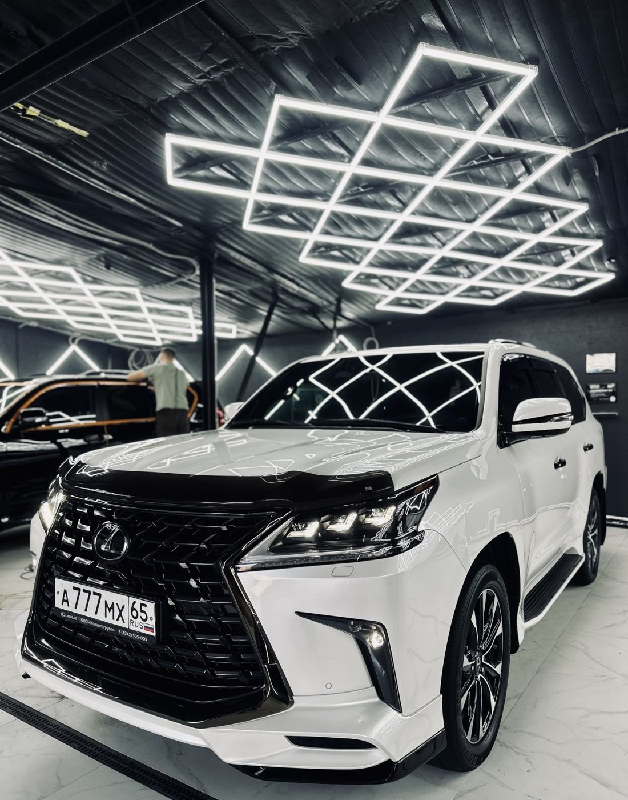

Тонируем стёкла, полируем лак, чистим салон и закрываем кузов плёнкой. Садиться за руль после этого — отдельное удовольствие.
Pai Detail стоит на Украинской улице, 21 — это детейлинг и автомойка в одном месте. Здесь тонируют стёкла, оклеивают кузов защитной плёнкой, полируют лак и делают химчистку. После заезда машина становится строже снаружи и приятнее внутри.
Машина заезжает серой от городской пыли, а выезжает такой, что хочется обойти её круг и рассмотреть.
Блеклый лак снова наливается глубиной, и цвет читается на солнце, а не расплывается мутным пятном.
Сидушки, ковры и потолок избавляются от застарелых пятен, и в салон снова заходишь без опаски.
Под капотом исчезают пыль и масляные разводы — открывать и показывать уже не стыдно.
Снизу смывается всё, что налипло за месяцы, и днище снова выглядит ухоженным.
В полдень в салоне прохладнее, и с улицы не разглядеть, что лежит на заднем сиденье.
Прозрачный слой берёт на себя дорожные неприятности, оставляя лак целым.
← листайте →
Пн–Вс, с 10:00 до 20:00, без выходных.
Наличные, банковская карта, перевод, QR-код или приложение.
Пока машина занята, можно спокойно поработать или отдохнуть.
WhatsApp, Telegram или звонок — выбираете, как удобнее.
Звоните или пишете в WhatsApp либо Telegram и выбираете удобный день.
Заезжаете на Украинскую улицу, 21 — работаем с 10:00 до 20:00.
Пока идёт работа, вас ждёт Wi-Fi, если решите подождать на месте.
Платите удобным способом и уезжаете на машине, к которой приятно подойти.
Работаем каждый день с 10:00 до 20:00 — звоните или пишите в мессенджер.
Каждый день, с 10:00 до 20:00.
Студия находится по адресу: Украинская улица, 21, Южно-Сахалинск.
Наличным расчётом, переводом с карты, по QR-коду, через банк или через приложение.
Позвонить или написать в WhatsApp или Telegram.
Цена зависит от марки и модели машины и объёма работ. Сумму студия называет по звонку или в мессенджере.
Комплексная мойка — это обычно общая очистка машины. Мойка днища и двигателя относится к скрытым зонам под кузовом и под капотом, где скапливаются грязь и реагенты с дороги. Такие работы обычно заказывают отдельно, когда нужно очистить именно эти участки.
Полировка обычно нужна, когда на кузове заметны мелкие царапины или потускнение лакокрасочного покрытия. Если покрытие выглядит ровным и блестящим, эта работа может не понадобиться.
Обычно после химчистки салон нужно проветрить, пока обивка и ковры полностью не высохнут. Пока они влажные, на сиденья лучше не садиться.
Защитная плёнка обычно нужна тем, кто часто ездит по трассе или по неровным дорогам, где камни и песок могут оставлять сколы. Для спокойной езды по городу, как правило, особой необходимости в ней может не быть.